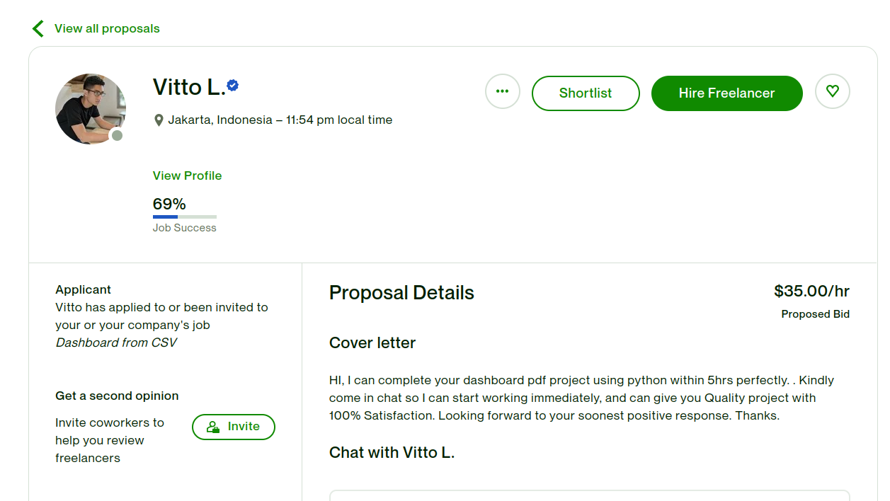
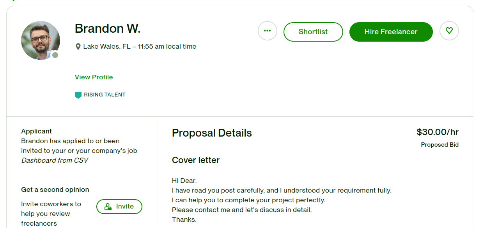
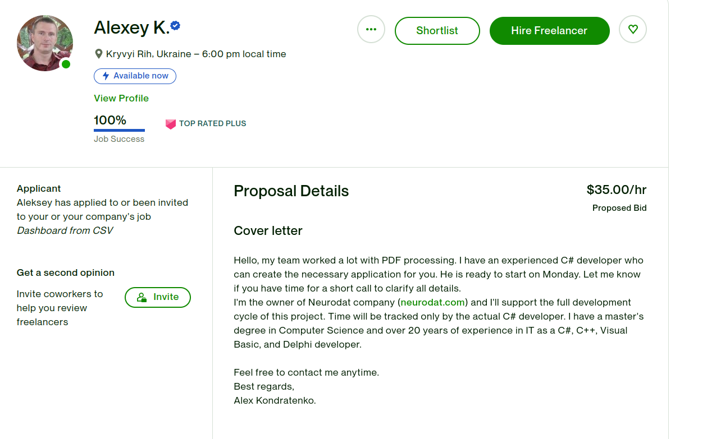
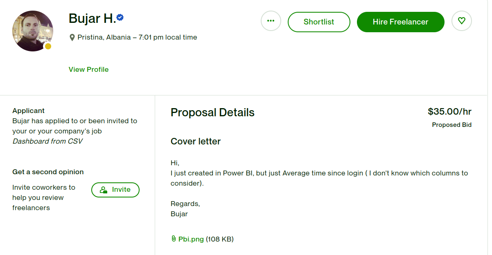
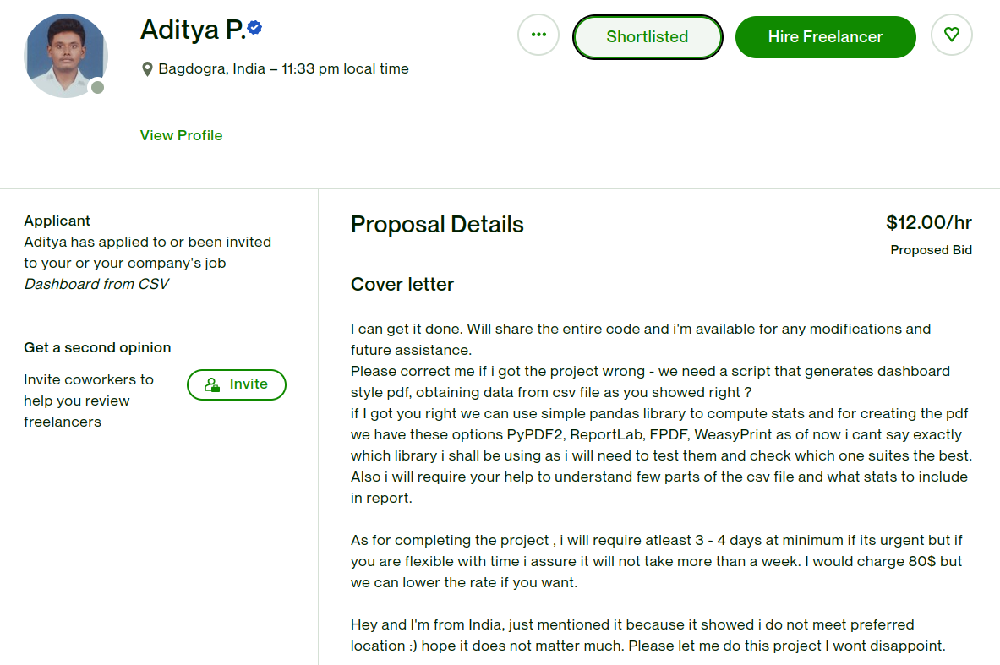
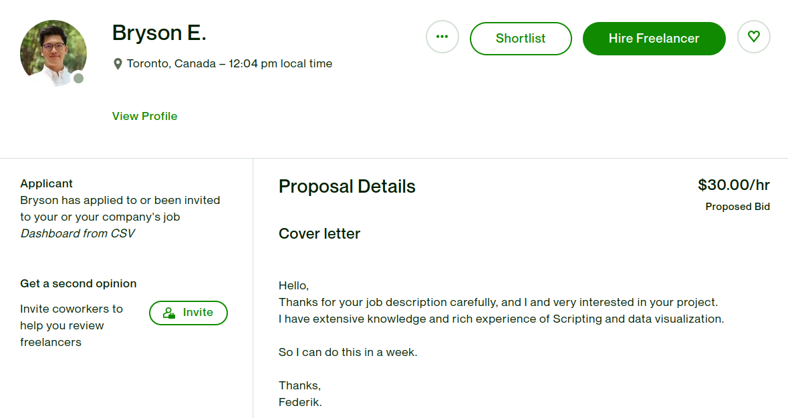

Outsource your technical cofounder
Here's how to amplify your skills and create a psuedo co-founder using offshore talent. Maintain control of your software and free yourself from managing software dev teams. Use this approach to find talent with integrity and ability. Extend your runway or rapidly develop more features to enhance your customer discovery capabilities.
Feature development through social marketing material
Build data-based graphs for social media postings, along with the code to integrate into the application.
This gives you two benefits: 1. Content for marketing posts based on your actual user data. 2. Identification of software talent for integration of features into your application. The approach below focuses on upwork.com, but you can use any number of asymmetrical cost platforms.
Task content
Create a new post.
Choose short term / part time work. -> Continue
Title: Dashboard from csv.
Job category: scripting and automation -> Continue
Choose the skills: Dashboard Scripting Data Visualization PDF HTML
Choose small project, less than 1 month.
Intermediate experience
Not part time to full time hire (contract only)
Location: Worldwide
Select eastern european countires:
Bulgaria
Poland
Serbia
Slovakia
Slovenia
Ukraine
Yes, you want it from much lower to much higher than US rates. The
next step will give you options. Choose 5-40 hours for the rate. How
is this fair?
As of Mar 2023, software devleopment rates nationwide are:
US: 43$/hr
Bulgaria: 50
Poland 40
Serbia 24
Slovakia: 19
Slovenia: 75
Ukrains: 32
For a technical cofounder these rates are the equivalent of 200-400 per hour.
Paste the job description:
Title: Dashboard from csv.
Your creation of a dashboard style one page report in pdf generated from the following data.
We also want the code used to create the report.
Some examples of content that could be in the report:
Total number of users.
Users by domain.
Total number of paying customers.
Total number of free trial users.
Total number of trial expired users.
Total number of cancelled users.
Average time since login.
To reiterate, we would like a one-page PDF report that uses the data
linked in the csv below. The code used to generate the report is
required as well. For example, you might use weasyprint in python
along with some hand specified html markup. This or any other
technology you choose to generate the report is fine, with the
following limitations:
1. Free, open source.
2. Single line execution to generate the report.
Can you do this? If so, please respond with what your plan and how
long it will take you to complete.
Add an attachment that is an export of your current user list.
Click Post job.
Choose 'hire a single freelancer'.
Fill our your company profile if not already done so.
Talent selection
If you want to selectively invite candidates to the job, use the
following rules:
Search for candidates:
Search for a keyword from the job description, such as "python dashboard"
Set the filters to the following settings:
Earned amount: 1K+
Job success: 90%+
Hourly rate: $10 and below
Hourse billed: 100+
English Level: If this is required, use the tests, not the self-descriptions.
The self-descriptions of native, fluent, etc. are not accurate.
Freelancer type: Independent freelancer
Location: Desired geography
Expectations
Approximately 24 hours later, you should have at least 15 responses.
Open oldest proposal first.
Your hiring candidates based on screen or qualification.
Did they read the post or was it a form response?
Read and tailored reply -> shortlist
Form response -> do nothing
Examples below of form responses include the following examples:
1. No indications they read the post whatsoever.
2. They at least read the post, and copied and pasted the requirements into their form response.


Response below is from an individual which is really a firm.
This is what you do not want as you will be managing the team
yourself. You want to train yourself to create tiny technical tasks
that can be executed quickly at tiny cost and integrated into your
product, achieving technical cofounder speed.

Examples below of good responses:
This is the outstanding level that typically arrives from one of the
candidates, where they essentially do most of the work requested and
post it as part of their response:



Review the shortlist entries and hire. Remember the goal here is not
perfect work, the goal is identification of talent and integrity.
Follow up
+---------------------+
|Go to upwork.com |
|Click messages |<---------------------------------------------------------------------------+
|Click oldest message | |
+---------------------+ |
| |
| |
v |
+---------------------+ |
|Review work products | |
+---------------------+ |
| |
v |
********* ********* ********* |
** ** ** ** ** ** +---------------+ |
** Do the work ** NO ** Does the ** YES ** Did you ** YES |Apologize, and | |
* products *---------->* contractor *----->* communicate *------>|post the fixed | |
** meet the ** ** have quest.?** ** badly? ** |communication. | |
** spec? ** ** ** ** ** +---------------+ |
********* ********* ********* |
| | | +-----------------+ |
| +------------+ | NO |Rephrase the task| |
| | +-------------> |requirements | |
| | +-----------------+ |
| v | |
| +-----------------+ v |
| |Degrade contractor +------------------+ |
| |assesment | |Degrade contractor| -+
| +-----------------+ |assesment |
v +------------------+
+--------------------+
| Improve contractor |
| assesment |
+--------------------+
|
|
v
*********
** **
** Is the work ** NO
* complete? *------
** **
** **
*********
|
|
v ********* *********
+-----------------+ ** ** +--------------------+ ** **
| Click Jobs | ** Did they ** YES | Improve contractor | ** Pay **
| Click job title |-------->* stay within *----->| assesment |--------->* contractor *
| View contract | ** time budget?** +--------------------+ ** **
+-----------------+ ** ** ** **
********* *********
| NO +------------------+
+-------------->|Degrade contractor|
|assesment |
+------------------+
Evaluation
Make sure the instructions can be followed to run the report
generation tool as required in the job posting.
Integration
Now that you have identified some talent to work with, send messages
like that shown below. Make sure to send these directly to them, and
not to everyone on upwork.
"We'd love to integrate the dashboard creation into our main project.
Can I send you some requirements and see what you think? Thanks."